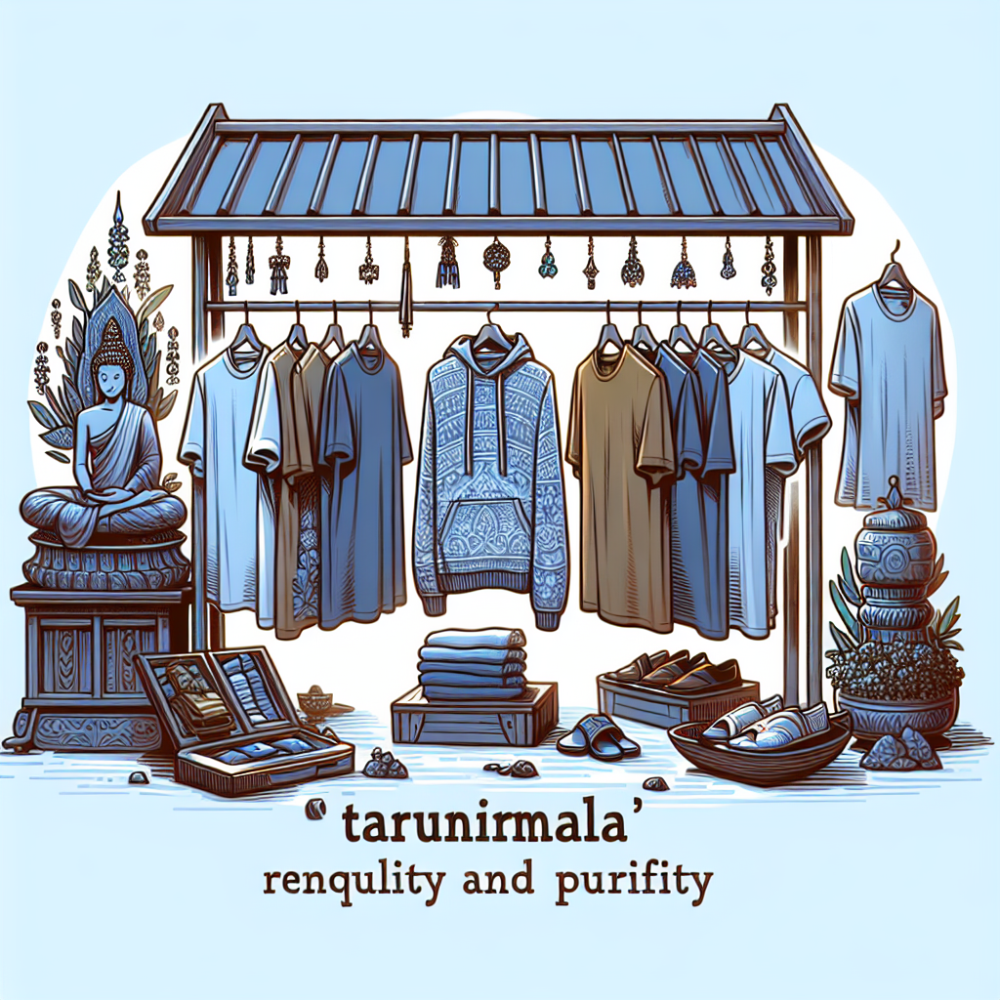

Tarunirmala adalah nama yang melambangkan kedamaian dan kemurnian dalam setiap helai pakaian yang dijual. "Tarubaya" berarti "Rumah yang Tenang" dalam bahasa Sunda, mencerminkan tempat yang nyaman dan damai. "Nirmala" berarti "Suci dan Murni" dalam bahasa Sanskerta, menggambarkan kualitas dan kebersihan produk yang ditawarkan. Toko ini menawarkan kaos dan hoodie yang tidak hanya modis tetapi juga memberikan kenyamanan dan ketenangan bagi pemakainya.
VISI
Menjadi toko pakaian terkemuka yang dikenal karena menawarkan produk-produk berkualitas tinggi yang memadukan kenyamanan, kedamaian, dan kemurnian, serta memberikan pengalaman berbelanja yang memuaskan dan menyenangkan bagi pelanggan.
MISI
Menghasilkan produk yang berkualitas Mengutamakan Kenyamanan Pelanggan Menghargai Kearifan Lokal Berkomitmen pada Keberlanjutan Memberikan Nilai Tambah Inovasi Berkelanjutan